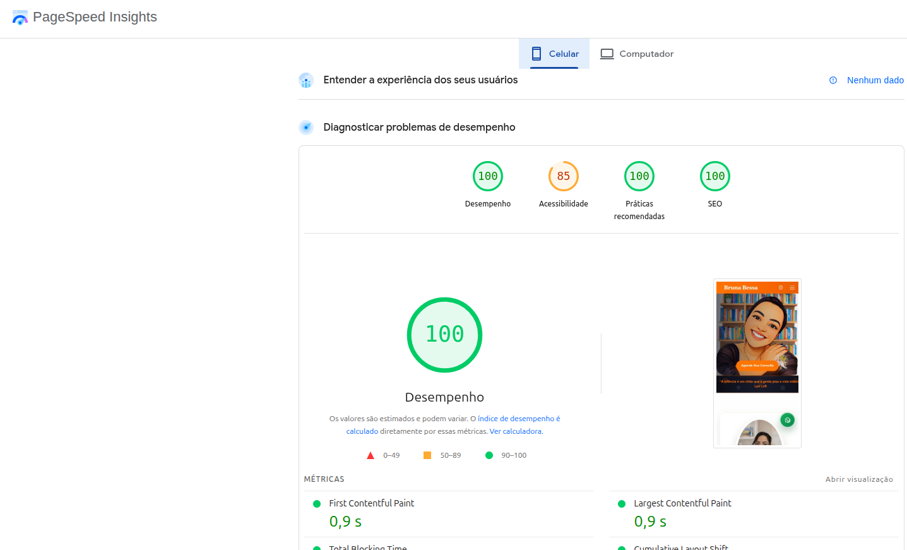

Depoimento
O que a Bruna disse
Ficou lindo! Eu amei.
100 Performance mobile
100 SEO Lighthouse
3+ CTAs por página

Case Study
Psicóloga Bruna Bessa — atendimento infantojuvenil em São Paulo, presencial e online, com foco em orientação parental.
A Bruna atendia quase só por indicação — sem presença online estruturada, dependia 100% de boca a boca para conseguir novos pacientes infantojuvenis. Pais que pesquisavam por "psicólogo infantil São Paulo", "orientação parental" ou "terapia para adolescentes" não chegavam até ela.
O objetivo era construir um site profissional completo: home de conversão, rotas internas por serviço, artigos e blog com links entre páginas — ampliando a superfície indexável para buscas long-tail. Posição no Google depende também de concorrência e presença fora do site.
Site multi-página com home de conversão, rotas internas dedicadas e blog — performance otimizada em todas as páginas:
HTML5, CSS3 e JavaScript vanilla — performance no topo da lista. Mobile-first em cada breakpoint.
Home + rotas internas + blog com posts indexáveis. Internal linking entre páginas e artigos para ampliar superfície de conteúdo.
WhatsApp + formulário + telefone — múltiplos caminhos. Mapa do consultório via Google Maps embed.
Schema.org, meta tags por página, sitemap.xml, robots.txt, OpenGraph, internal linking entre artigos do blog.
Métricas do que entregamos no código — posição no Google depende também de backlinks, concorrência e esforço contínuo do cliente.

Mais do que números: a Bruna agora tem um canal próprio de captação — site profissional, artigos e múltiplos caminhos para conversa. Visibilidade orgânica cresce com tempo, conteúdo e presença fora do site.
Depoimento
Ficou lindo! Eu amei.
Sites para pequenos negócios com home de conversão, rotas internas, blog, SEO técnico e múltiplos pontos de conversão — a base certa; visibilidade orgânica depende também do cliente e do mercado.